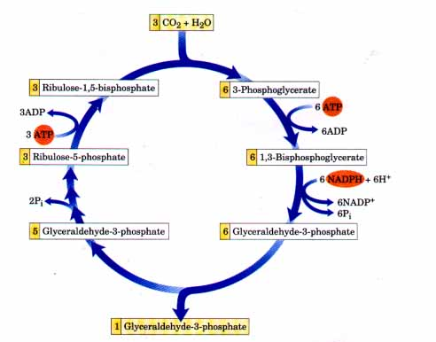
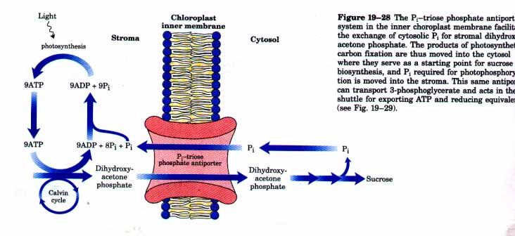
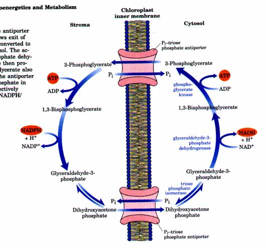

The net result of the Calvin cycle is the conversion of three molecules of CO2 and one molecule of phosphate into a molecule of triose phosphate. The stoichiometry of the overall path from CO2 to triose phosphate, with the regeneration of ribulose-1,5-bisphosphate, is shown in Figure 19-27. Three molecules of ribulose-1,5-bisphosphate (a total of 15 carbons) condense with three CO2 (three carbons) to form six molecules of 3-phosphoglycerate (18 carbons). These six molecules of 3-phosphoglycerate are reduced to six molecules of glyceraldehyde-3phosphate, with the expenditure of six ATP (in the synthesis of 1,3-bisphosphoglycerate) and six NADPH (in the reduction of 1,3bisphosphoglycerate to glyceraldehyde-3-phosphate). One of these molecules of glyceraldehyde-3-phosphate is the net product of the process. The other five glyceraldehyde-3-phosphate molecules (15 carbons) are rearranged in steps l to 8 of Figure 19-23 to form three molecules of ribulose-1,5-bisphosphate (15 carbons). The last step in this conversion requires one ATP per ribulose-1,5-bisphosphate, or a total of three ATP. Thus, for every molecule of triose phosphate produced by photosynthetic CO2 fixation, six NADPH and nine ATP are required.
The source of ATP and NADPH for these reactions is the lightdriven reactions of photophosphorylation (Chapter 18). Of the nine ATP molecules converted to ADP and phosphate in the generation of a molecule of triose phosphate, eight of the phosphates are released as P; and combined with eight ADP to regenerate ATP. The ninth phosphate is incorporated into the triose phosphate itself. To convert the ninth ADP to ATP, a molecule of P; must be imported from the cytosol, as we will see later.
 |
Figure 19-27 The stoichiometry of CO2 fixation via the Calvin cycle. For every three CO2 molecules fixed, one molecule of triose phosphate (glyceraldehyde-3-phosphate) is produced and nine ATP and six NADPH are consumed. |
In the dark, the production of ATP and NADPH by photophosphorylation ceases, and the incorporation of CO2 into triose phosphate (by the so-called "dark reactions") also stops. The "dark reactions" of photosynthesis are so named to distinguish them from the primary lightdriven reactions of electron transfer to NADP+ and synthesis of ATP, described in Chapter 18. They do not, in fact, occur at significant rates in the dark in photosynthetic organisms (although they do in chemotrophic organisms). Therefore, these reactions are more appropriately called the carbon fixation reactions of photosynthesis.
Fixed carbon generated in the chloroplast is also stored there in significant amounts. Within the chloroplast stroma are all the enzymes necessary to convert the triose phosphates produced by CO2 fixation (glyceraldehyde-3-phosphate and dihydroxyacetone phosphate) into starch, which is stored in the chloroplast as insoluble granules. Aldolase condenses the trioses to fructose-1,6-bisphosphate, fructose-1,6-bisphosphatase produces fructose-6-phosphate, phosphohexose isomerase yields glucose-6-phosphate, and phosphoglucomutase produces glucose-1-phosphate, the starting material for starch synthesis.
All the reactions of the Calvin cycle except the first, catalyzed by rubisco, and the last, catalyzed by ribulose-5-phosphate kinase, also take place in animal tissues. For lack of these two enzymes animals cannot carry out net conversion of CO2 into glucose.
The inner chloroplast membrane is impermeable to most phosphorylated compounds, including fructose-6-phosphate, glucose-6-phosphate, and fructose-1,6-bisphosphate. There is, however, a specific transporter (antiporter) that catalyzes the one-for-one exchange of Pi; with triose phosphates, either dihydroxyacetone phosphate or 3-phosphoglycerate (Fig. 19-28; see also Fig. 19-22). This antiporter simultaneously moves triose phosphate out of the chloroplast to the cytosol and Pi into the chloroplast, where it is used in photophosphorylation.

Figure 19-28 The Pi-triose phosphate antiport system in the inner choroplast membrane facilitates the exchange of cytosolic Pi for stromal dihydroxyacetone phosphate. The products of photosynthetic carbon fixation are thus moved into the cytosol where they serve as a starting point for sucrose biosynthesis, and Pi required for photophosphorylation is moved into the stroma. This same antiporter can transport 3-phosphoglycerate and acts in the shuttle for exporting ATP and reducing equivalents (see Fig. 19-29).
Without this antiport system, CO2 fixation in the chloroplast would quickly come to a halt. The net transport of triose phosphates out of the chloroplast serves the important function of removing the triose phosphate products of carbon fixation. In the cytosol, the triose phosphates are converted to sucrose by the pathways illustrated in Figures 19-22 and 19-17. Sucrose synthesis in the cytosol and starch synthesis in the chloroplast are the major pathways by which the excess triose phosphates are "harvested." The last step of sucrose synthesis yields one molecule of free Pi (Fig. 19-17). This is transported back into the chloroplast and used in the synthesis of ATP, effectively replacing the molecule of Pi that is used to generate triose phosphate, as described above. For every molecule of triose phosphate removed from the chloroplast, one Pi is transported into the chloroplast. If this exchange were blocked, triose phosphate synthesis would quickly deplete the available Pi in the chloroplast and prevent further CO2 fixation.
 |
Figure 19-29 The Pi-triose phosphate antiporter in the inner chloroplast membrane allows exit of dihydroxyacetone phosphate, which is converted to glyceraldehyde-3-phosphate in the cytosol. The activity of cytosolic glyceraldehyde-3-phosphate dehydrogenase and phosphoglycerate kinase then produces NADH and ATP; the 3-phosphoglycerate also produced reenters the chloroplast via the antiporter and is reduced to dihydroxyacetone phosphate in the stroma, completing a cycle that efiectively moves ATP and reducing equivalents (NADPH/ NADH) out of the chloroplast. |
This Pi-triose phosphate antiport system serves one additional function. ATP and reducing power are needed in the cytosol for a variety of synthetic and energy-requiring reactions. These requirements are met to an as yet undetermined degree by the mitochondria. A second potential source of energy is the ATP and NADPH generated in the stroma during the light reactions of photosynthesis; however, ATP and NADPH do not cross the chloroplast membrane. The antiport system has the indirect effect of moving ATP and reducing equivalents across the chloroplast membrane (Fig. 19-29). Dihydroxyacetone phosphate formed in the stroma by C02 fixation is transported to the cytosol, where it is converted by glycolytic enzymes to 3-phosphoglycerate, generating ATP and NADH. 3-Phosphoglycerate reenters the chloroplast, completing the cycle. The net effect is transport of NADPH/NADH and ATP from the chloroplast to the cytosol.